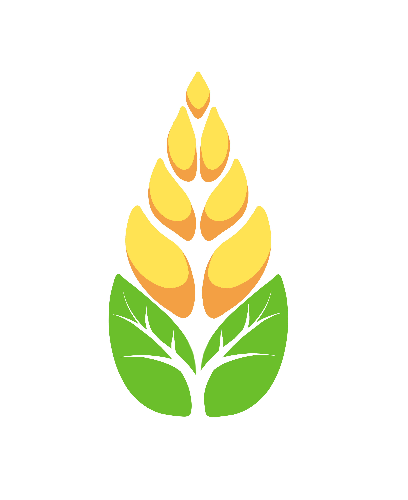
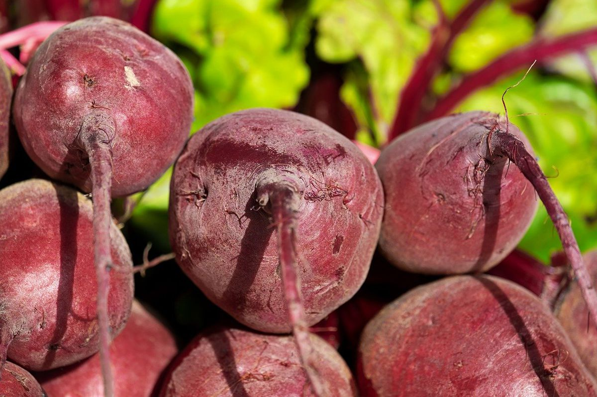
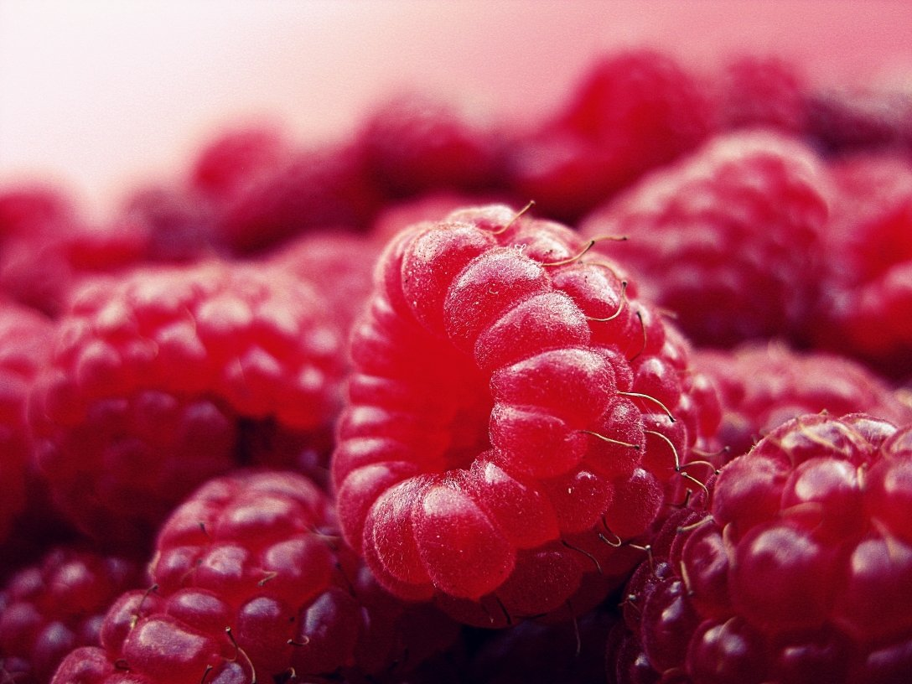
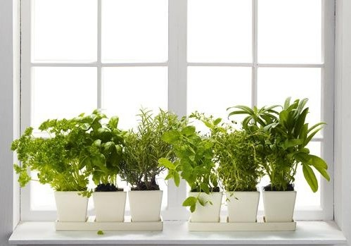

Рослинництво
Тваринництво
Агротехніка
Чи можна сіяти буряк, якщо випав сніг: тонкощі процедури

Якщо на городі лежить вже сніг, то сіяти буряк досить дивно. Саме до такої думки схиляється більшість людей. Насправді можна
На Рівненщині садівники б’ють рекорди з вирощування малини

У Рівненській області розвивається сектор садівництва та ягідництва, який охоплює площу приблизно 500 гектарів. На них понад половину насаджень припадає на малину. Про це повідомляє Департамент агропромислового розвитку Рівненської обласної державної адміністрації у своєму офіційному акаунті у Facebook.
Як виростити зелень на підвіконні за 7 днів

У молодих паростках є максимальний вміст корисних речовин, на які здатна тільки рослина. Саме тому варто і буденний, і у святковий раціон додавати мікрогрін. Купувати в маркеті не всім по кишені, а от виростити вдома — бюджетний та швидкий варіант.